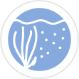

Aquatic Plant Systematics
Phylogenetic relationships, evolution, and biogeography of aquatic vascular plants
Menyanthaceae
Taxonomy, morphology, and systematics of the aquatic plant family Menyanthaceae

Phragmites australis
Population genetics of native and non-native subspecies in North America